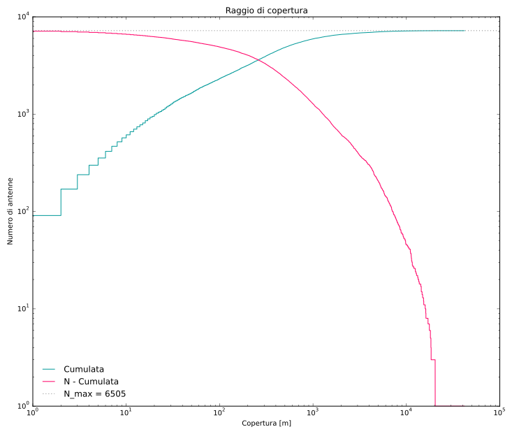

Sommario
Lo scopo di questo lavoro è fare un'analisi di rete usando un campione di antenne telefoniche cellulari, ipotizzando di voler costruire una ipotetica *mesh network* con esse. Abbiamo scelto di analizzare il sistema delle antenne comprese entro il Raccordo Anulare di Roma. Non sapendo a priori di quale tipo di rete si tratta, e che tipo di grafo si costruisce da essa, sono state studiate alcune proprietà topologiche e comportamentali dell'insieme di antenne studiate. Dopo aver definito il criterio con cui dare un link a due nodi, sono state calcolate le matrici di adiacenza della rete complessiva e di quelle composte solo dalle antenne dei singoli gestori presenti in Italia. La prima parte dell'analisi consiste nell'estrapolare dai grafi ottenuti le distribuzioni dei gradi e nell'affidare all'istogramma dei gradi la forma funzionale che meglio gli si adatti. Avendo così ottenuto indicazioni significative sui tipi di rete in analisi, le abbiamo verficate studiando il comportamento percolativo della rete, mediante rimozione di nodi in due diversi scenari: un attacco intenzionale, che rimuovesse le antenne a partire da quelle con maggior grado, e una caduta random del sistema. I risultati ottenuti sono stati confrontati con modelli di rete esponenziali e scale-free. L'esposizione è articolata nel seguente modo:
Nel paragrafo 1 verranno esposte le basi teoriche dello studio effettuato, con particolare accento ai modelli di rete utilizzati come riferimento e ai concetti di percolazione e soglia percolativa.
Nel paragrafo 2 si spiega come sono stati raccolti e organizzati i dati, come è stata definita la rete e quindi con quali criteri è stata definita la matrice di adiacenza. Successivamente, accennando ai problemi computazionali avuti nel gestire la rete complessiva da circa 7000 nodi, verranno calcolate le matrici di adiacenza e le distribuzioni del grado.
Nel paragrafo 3 viene effettuato lo studio percolativo mediante i due scenari di rimozione di nodi, analizzando l'andamento del diametro e delle dimensioni del cluster più grande con la progressiva caduta delle antenne. I risultati sono stati confrontati con quelli ottenuti dai modelli, i quali hanno rivelato delle ambiguità. Nel caso di attacco random è stato testato infine un ipotetico effetto cascata causato dall'overload delle antenne rimaste (previa rimozione dei grossi hub che servono proprio a scongiurare tale evenienza).
TODO Cosa vogliamo fare
2 GeoData: where and why (TODO sistemare titolo)
Google Location Service
GPS and battery drain
La geolocalizzazione dei dispositivi, soprattutto quelli mobile, sta rapidamente diventando parte intergrante del nostro modo quotidiano di fruire la tecnologia. Si usa nel navigatore stradale, per impostare automaticamente il luogo di cui desideriamo le previsioni del tempo o da cui vogliamo prendere un treno o un aereo, per aggiungere informazioni contestuali alle fotografie che scattiamo e tanto altro ancora.
Il modo storicamente utilizzato per effettuare la geolocalizzazione è per via satellitare, tramite il GPS. Ma il GPS ha due tipi di problemi:
- è dannatamente lento ad agganciare un numero congruo di satelliti, tali da poter registrare una posizione accurata,
- consuma un sacco di energia. Soprattutto il secondo punto è in palese conflitto con l'esigenza dei moderni dispositivi portabili di avere una ampia autonomia energerica.
Per porre rimedio a questo fatto, Google ha via via comiciato ad utilizzare altri tipi alternativi di geolocalizzazione, per comporre un sistema ibrido.
- Un primo grado di grossolana geolocalizzazione avviene tramite le celle della rete telefonica, a cui tutti gli smartphone sono connessi. La precisione è dell'ordine delle centinaia di metri.
- Un secondo grado, molto più accurato, viene realizzato tramite le reti wifi visibili in quell'istante dal dispositivo. La precisione è dell'ordine di qualche decina di metri.
- Infine, solo se il compito richiesto richiede una precisione ulteriore, si accende il GPS, per un risultato con la precisione inferiore al metro. Il cominciare da una stima della posizione più che accettabile riduce di molto la durata delle operazioni a GPS acceso, consentendo un drastico risparmio della batteria.
Geolocalization via WiFi
La diffusione del Wifi è ormai capillare, soprattutto in contesto cittadino. Virtualmente c'è un router WiFi in ogni appartamento. Mentre camminiamo per la città col WiFi dello smartphone acceso, captiamo in ogni punto decine di segnali. Se è nota la posizione di questi router e la potenza del segnale da loro emesso è possibile triangolare la nostra posizione con una notevole precisione, dovuta sia al fatto che un segnale WiFi ha un raggio tipico di una trentina di metri, sia dovuto all'ingente numero di segnali coi quali si sta triangolando, tipicamente più di una decina.
Quindi per sapere la mia posizione devo avere accesso a una mappa delle posizioni di tutti i router. E come si costruisce questa mappa? Esattamente al contrario: camminando per la città con GPS acceso, avendo dunque un'alta precisione sulla posizione del dispositivo, e triangolando la posizione di tutti i router visibili combinando tutte le rilevazioni del tracciato.
Dunque Google ha mappato tutti i WiFi di tutto il globo per dare la possibilità agli utenti dei suoi servizi come Google Maps (e delle applicazioni che si appoggiano alle sue API) di ottenere la propria localizzazione con una buona precisione è un consumo di batteria risibile. La precisione è arrivata ad essere dell'ordine dei 5 metri e i tempi di accesso pressoché istantanei: di fatto rendendo inutile accendere il GPS nella maggior parte dei casi.
Questo tipo di localizzazione ha inoltre un altro grande vantaggio: funziona anche sottoterra e dentro gli edifici, luoghi normalmente inaccessibili al segnale GPS, di natura satellitare.
Ovviamente la mappa dei router WiFi è in continua evoluzione, per cui il modo più conveniente per redigerla è sfruttando il crowdsourcing: ai milioni di utenti ignari giornalmente in moto per la città viene acceso il GPS un paio di volte al giorno per pochi secondi, in un momento di inutilizzo del dispositivo, e in questo modo si crea velocemente una mappa complessiva e quotidianamente aggiornata, a beneficio di tutti.
Tutto questo è tremendamente intelligente ed efficiente. C'è un solo grande problema: i dati sono chiusi.
Mozilla Location Service
Mozilla è da sempre impegnata nello svilutto di tecnologie web aperte e standardizzate. Avendo riconosciuta la centralità della geolocalizzazione e la crescita esponenziale di siti ed applicazioni location-aware, ha deciso di ricalcare le orme di Google e fondare il suo servizio di geolocalizzazione usando WiFi ed antenne cellulari: Mozilla Location Service.
L'obbiettivo è quello di geolocalizzare gli utenti sulla base dell'ambiente radio che li circonda: MLS è un progetto collaborativo per creare un database mondiale aperto di Cell ID e WiFi georeferenziati. La mappatura viene fatta dagli utenti su base puramente volontaria, utilizzando l'apposita applicazione Mozilla Stumbler.

Il progetto è ormai maturo e, come si può osservare dalle mappe sopra e sotto, la copertura del mondo è molto capillare.
- La prima mostra un esempio di utilizzo del programma a San Lorenzo, nel percorso tra le nostre due abitazioni. I pallini verdi sono i punti GPS delle rilevazioni complete (WiFi + rete cellulare) effettuate durante il tragitto. Come si può notare sono piuttosto fitti: 4 0 5 per ogni isolato. Le aree sfumate in blu mostrano invece, in maniera approssimata per motivi di privacy, l'esito dell'eleborazione di tutte le precedenti osservazoni nell'area, ovvero tutti i router WiFi e le antenne ricostruiti fin ora. La mappa è fittissima, ma questo non deve trarre in inganno: è ancora incompleta e per certi versi inaffidabile. Un esempio diretto sono le numerose ricostruzioni che appaiono in mezzo ai binari della stazione Termini: quelle derivano dai WiFi all'interno dei treni a cui si collegano i viaggiatori, ma che essendo oggetti in moto non possono essere usati ai fini della geolocalizzazione e pertanto dovrebbero essere filtrati ed esclusi dal database.
- La seconda mappa (interattiva) mostra invece la copertura globale raggiunta dal progetto. Sebbene risulti uno stadio abbastanza avanzato, si può notare come ci siano ancora delle disparità di mappatura anche tra gli stati ad alta presenza tecnologica: si confrontino ad esempio le capitali della Cina e del Giappone. Inoltre, essendo un progetto collaborativo open source e con sede negli Stati Uniti, sì può vedere come gli stati in cui la cultura open è meno diffusa o quelli in tensione con gli USA per quanto riguarda la politica estera risultino globalmente meno mappati. Un esempio emblematico potrebbe essere la differenza tra Nord Korea e Sud Korea.
Mozilla Location Service wolrd coverage.
Dato l'approccio di crouwdsourcing collaborativo, i dati sono tanti e a copertura mondiale, continuamente aggiornati, aperti, facilmente scaricabili in database ordinati, puliti e ben documentati. Di seguito sono elencate alcune statistiche per avere un'idea dei numeri in gioco:
Statistiche di aquisizione Statistiche regionaliMozilla Location Service funziona sia con le antenne cellulari che con i WiFi, soltanto che attulamente i dati della mappa WiFi (mostrati approssimati nella mappa precedente) non possono essere resi pubblici per questioni relative alle norme sulla privacy vigenti sia negli Stati Uniti sia in altre nazioni.
Pertanto gli unici dati attualmente liberamente disponibili (dominio pubblico, licenza CC0) sono quelli sulle antenne radio delle varie generazioni: 2G (GSM), 3G (UMTS), 4G (LTE).
I dati forniti da Mozilla sono un'estensione di quelli già disponibili sulla piattaforma OpenCellID, anche loro open (licenza CC-BY-SA 3.0).
Questi sono dunque i dati che abbiamo analizzato in questa nostra tesina.
2.1 Struttura dei dati
I dati scaricabili dal sito del progetto Mozilla Location Service appaiono così:
Esempio del dataframe MLSI dati vengono forniti in un file CSV, le cui voci, secondo la documentazione ufficiale, sono organizzate nella seguente maniera:
radio
Network type. One of the strings GSM, UMTS or LTE.
mcc
Mobile Country Code. An integer, for example 505, the code for Australia.
net
For GSM, UMTS and LTE networks, this is the mobile network code (MNC). An integer, for example 4, the MNC used by Vodaphone in the Netherlands.
area
For GSM and UMTS networks, this is the location area code (LAC). For LTE networks, this is the tracking area code (TAC). An integer, for example 2035.
cell
For GSM and LTE networks, this is the cell id or cell identity (CID). For UMTS networks this is the UTRAN cell id, which is the concatenation of 2 bytes of radio network controller (RNC) code and 2 bytes of cell id. An integer, for example 32345.
unit
For UMTS networks, this is the primary scrambling code (PSC). For LTE networks, this is the physical cell id (PCI). For GSM networks, this is empty. An integer, for example 312.
lon
Longitude in degrees between -180.0 and 180.0 using the WSG 84 reference system. A floating point number, for example 52.3456789.
lat
Latitude in degrees between -90.0 and 90.0 using the WSG 84 reference system. A floating point number, for example -10.034.
range
Estimate of radio range, in meters. This is an estimate on how large each cell area is, as a radius around the estimated position and is based on the observations or a knowledgeable source. An integer, for example 2500.
samples
Total number of observations used to calculate the estimated position, range and averageSignal. An integer, for example 1200.
changeable
Whether or not this cell is a position estimate based on observations, and therefore subject to change in the future, or is an exact location entered from a knowledgeable source. A boolean value, encoded as either 1 (for “changeable”) or 0 (for “exact”).
created
Timestamp of the time when this record was first created. An integer, counting seconds since the UTC Unix Epoch of 1970-01-01T00:00:00Z. For example, 1406204196, which is the timestamp for 2014-07-24T12:16:36Z.
updated
Timestamp of the time when this record was most recently modified. An integer, counting seconds since the UTC Unix Epoch of 1970-01-01T00:00:00Z. For example, 1406204196, which is the timestamp for 2014-07-24T12:16:36Z.
averageSignal
Average signal strength from all observations for the cell network. An integer value, in dBm. For example, -72.
This field is only used by the OpenCellID project and historically has been used as a hint towards the quality of the position estimate.
I dati forniti sono di tipo aggregato, ovvero riportano il numero di osservazioni per antenna ed il risultato della stima della sua posizione. Esistono anche dati grezzi, ovvero corrispondenti alle singole osservazioni dei singoli utenti. Tale dataset però non viene reso pubblicamente disponibile, in quanto contenente diverse informazioni, anche di carattere dinamico, utili a tracciare il singolo individuo. È allo studio un meccanismo di autorizzazioni per permettere agni utenti consci degli eventuali rischi di pubblicare i dati che li riguardano.
I valori di latitudine e longitudine per le coordinate nelle proiezioni geografiche seguono il sistema di riferimento dettato dalla convenzione WSG 84 Web Mercator.
2.2 Data selection
Una volta scaricati i dati aggregati dalla pagina web https://location.services.mozilla.com/downloads si sono cominciate le operazioni di selezione dei dati.
Il data sample riguarda tutti i continenti e risulta molto grosso (un file csv di circa 650 MB), per cui è necessario ridurlo il più possibile per poterlo maneggiare col nostro limitato quantitativo di RAM.
Una prima grossolana ma efficiente scrematura riguarda i dati caratterizzati da un mobile county code non italiano, si è pertanto imposta la condizione
mcc == 222
Successivamente vengono scartati i dati ritenuti inaffidabili, ovvero con soltanto una rivelazione da parte degli utenti
samples > 1
Adesso che il datasample si è ridotto molto possiamo effettuare delle operazioni computazionalmente un po' più pesanti: vogliamo eliminare tutte le rilevazioni al di fuori del Grande Raccordo Anulare, che per semplicità è stato schematizzato come una circonferenza di raggio 10 km con centro esattamente nol Colosseo.
Per far questo serve definire una nozione di distanza. Dato che i nostri sono dati geolocalizzati sarebbe naturale introdurre una distanza geodesica. A tal fine abbiamo usato la libreria geopy, che contiene due definizioni differenti:
- Grat circe distance: la distanza geodesica su una sfera. Per due punti non agli antipodi passa sempre una circonferenza di raggio massimo lungo cui scorre la geodesica, ovvero il cammino di minima distanza.
- Vincenty distance: la distanza geodesica su un ellissoide oblato. Tale distanza tiene in conto che la Terra non è una sfera perfetta ma è invece leggermente schiacciata ai poli. Delle due è quella più accurata, ma anche quella più difficile da calcolare numericamente.
L'ulteriore condizione da soddisfare per i dati risulta dunque
geodesicDistance(place) <= raggioRaccordoAnulare
Si sono fatte differenti prove sia con vincenty (più lenta) che con great_circle (leggermente più veloce), ma i tempi di calcolo risultavano comunque spropositati. Pertanto abbiamo fatto una approssimazione: dato che la città di Roma sottende un angolo solido minuscolo rispetto alla totalità del pianeta, abbiamo ritenuto accettabile usare una distanza euclidea, ovviamente trasformando in metri le coordinate angolari di latitudine e longitudine con i relativi fattori di scala, dettati dal raggio terrestre.
La distanza euclidea coinvolge solo quadrati è radici quadrate, risultando nel complesso circa dieci volte più veloce delle altre due concorrenti. Il prezzo da pagare è una leggerissima imprecisione, del tutto trascurabile alle nostre scale.
La funzione utilizzata è pertanto
def euclideanDistace(x,y):
return numpy.sqrt(numpy.square(x) + numpy.square(y))
da notare il fatto che per il calcolo algebrico è stata utilizzata la libreria numpy invece che la libreria math builtin in Python, poiché è più veloce (è scritta in C) e supporta le operazioni direttamente su vettori di coordinate.
I dati sono stati importati in un dataframe tabulare usando la libreria pandas. Questo che ci ha permesso di effettuare facilmente tutte le query necessarie per il filtraggio dei dati.
A questo punto abbiamo finalmente il nostro datasample della città di Roma: circa 7000 antenne in un file csv agevolmente maneggiabile di circa 1MB.

Per visualizzare agevolmente i nostri dati serve una mappa georeferenziata, preferibilmente interattiva. A tal fine per il notebook di IPython abbiamo usato la libreria gmaps, che dà semplice accesso inline alle mappe di Google Maps dando la possibilità di creare una heatmap, mentre per l'HTML di questa presentazione abbiamo usato le analoghe funzioni della libreria gmplot.
roma = pandas.read_csv("../data/Roma_towers.csv")
coordinate = roma[['lat', 'lon']].values
heatmap = gmaps.heatmap(coordinate)
gmaps.display(heatmap)
colosseo = (41.890183, 12.492369)
mappa = gmplot.GoogleMapPlotter(41.890183, 12.492369, 12)
mappa.heatmap(roma.lat.values,roma.lon.values)
mappa.draw("../doc/heatmap.html")
(per scrivere queste poche linee di codice c'è voluto un intero pomeriggio!)
Heatmap interattiva delle antenne telefoniche di Roma
Dalla mappa si capisce bene quanto sia fitta le rete di antenne Romana.
TODO creare il notebook ordinato "data selection"
2.3 Analisi del raggio di copertura delle antenne
Dato che ci servirà fare grafici con scale logaritmiche eliminiamo i dati di antenne che presentano un raggio nullo
range =! 0
Il raggio minimo risulta essere 1m, mentre quello massimo 20341m. Dato che il raggio del Grande Raccordo Anulare è circa 10km questo significa che ci saranno antenne con un grado di connessione totale. TODO forse spostare questa considerazione a quando si è spiegato il criterio di linking. TODO spiegare la possibile casa di questi valori di raggi così bassi
Facciamo un istogramma log-log per la distribusione del raggio di copertura, sia con la canalizzazione lineare sugli interi, sia con una canalizzazione logaritmica in base 2, per ridurre il rumore sulla coda.
 La canalizzazione logaritmica pesata permette di osservare l'andamento ben sotto il singolo conteggio, ampliando di una decade l'intervallo di osservazione.
La canalizzazione logaritmica pesata permette di osservare l'andamento ben sotto il singolo conteggio, ampliando di una decade l'intervallo di osservazione.
In figura si può vedere come l'andamento sia abbastanza power-law su diverse decadi, soprattutto fino a conteggio = 1. Per verificare ulteriormente questo fatto abbiamo generato anche la curva del frequency-rank, che risulta seguire senza esitazioni il trend delineato dagli istogrammi.
TODO cercare di spiegare questa power-law.
Il frequency-rank si ottiene ordinando in maniera decrescente il numero di conteggi per ogni canale unitario e associando un relativo ranking intero decrescente ai raggi corrispondenti.

Si è infine analizzata la distribuzione cumulata, lasciata nel grafico seguente non normalizzata. La distribuzione cumulata $C(x)$ rappresenta la probabilità che la variabile random assuma un valore minore o uguale a $x$.  TODO capire l'andamento della cumulata
{kind=link}
TODO mettere caption nell'html delle figure
TODO Facendo un fit TODO abbiamo ottenuto il seguerte esponente per l'andamento a potenza: TODO TODO mettere retta con pendenza con fit a mano spannometrico
TODO 2.4 Matrice di adiacenza e creazione del grafo
TODO correggere, mettere formule e spezzare in paragrafi
TODO prime ottimizzazioni (RAM e CPU) astuzie e approssimazioni. splitting della matrice, approssimazione distanza, stampa su file
TODO calcolare tutta la matrice di adiacenza con la distanza geodesica al posto di quella euclidea risulta pesantissimo ($N^2$ elementi)
TODO spiegare il criterio di linking
Prese le antenne nell'area selezionata come i nodi della rete, è necessario definire un criterio per stabilire un link. Nell'ottica di una ipotetica mesh network, la scelta è stata di considerare collegate due antenne se non hanno zone d'ombra del segnale nello spazio tra di esse, in modo che qualsiasi utente al suo interno possa comunicare con altri utenti (si suppone quindi un diverso metodo di comunicazione tra antenne, come cavo, altri canali Wi-fi). Trascurando dislivelli del terreno e edifici, è stato supposto che la porzione di spazio coperta da un'antenna sia un cilindro del raggio fornito dai dati. Il criterio scelto è stato quindi che la distanza $\delta_{ij}$ tra due antenne fosse minore dei loro raggi in modo tale che essi si sovrappongano per il $20\%$: $\delta_{ij} < 0.8(r_i+r_j)$.
Stabilito il criterio, bisogna costruire la rete, popolando la matrice di adiacenza dei nodi. Dato che il criterio di linking richiede la conoscenza della distanza tra due antenne, è stato necessario calcolare le distanze tra ogni coppia di nodi. I dati in nostro possesso forniscono le coordinate geografiche, che sono delle coordinate sferiche, e quindi ci si è posti il problema di come calcolare le distanze. Inizialmente la scelta è caduta su una funzione della libreria geopy, la quale permette di calcoalare la distanza geodesica con il metodo great-circle e con la formula vincenty. La prima è più veloce e usa un modello sferico di Terra, la seconda richiede più calcoli perché usa un accurato modello ellissoidale (impiega circa il doppio del tempo del metodo great-circle).
Purtroppo, tuttavia, i tempi di calcolo richiesti da queste funzioni sono piuttosto alti in prospettiva di calcolare una matrice di $7000^2$ elementi. Per risparmiare tempo, dato che la rete definita non è diretta, per prima cosa è stata modificata la funzione di calcolo della matrice di adiacenza in modo che calcolasse soltanto la metà superiore. Successivamente si poteva tentare di diagonalizzare a blocchi la matrice, cosa purtroppo impossibile poiché dai dati risulta che un certo numero di antenne hanno raggi d'azione nell'ordine dei 10-20 km, ricoprendo quindi tutta l'area di Roma selezionata.
L'unica via praticabile per far calare drasticamente il tempo necessario per calcolare tutte le matrici necessarie per l'analisi è stata quindi convertire le coordinate geografiche in cartesiane e usare la distanza euclidea. In questo modo si è ottenuto un guadagno di velocità di un fattore 10.
Calcolate le matrici definitive per la rete complessiva e per quelle delle singole compagnie, sono state salvate su file in modo da non doverle più ricalcolare.
2.5 Distribuzione del grado
I vettore di gradi per ogni nodo del grafo si ottiene facilmente con il metodo .degree() della classe Graph di networkx.
Abbiamo dunque fatto un istogramma congiunto di tutti i provider e della rete totale con un canale per ogni possibile numero naturare, ma in scala log-log risultava illegibile. Per ridurre un poco il rumore sulle code la canalizzazione è stata ridutta di 8 volte rispetto alle unità naturali. Data la poca estensione delle curve ed il fatto che molte non arrivavano fino ad 1, si è scelto di evitare il log-binning in base 2, in quanto in questo caso troppo grossolano e non in grado di conservare tutta l'informazione sulle code della distribuzione.

Come si può vedere nella figura, soprattutto per la rete complessiva l'andamento è circa power law dal massimo in poi. L'esponente è in valore assoluto di poco superiore a 3 nella prima parte e di poco inferiore a 3 nell'ultima parte della coda, estesa per circa mezza decade.
Di seguito viene anche riportato l'andamento del frequency-rank (in forma di scatterplot per migliorarne la legibilità). La differenza nei valori sulle y rispetto all'istogramma precedente è dovuta al fatto che grazie all'ottima visibilità qui è stato possibile riprendere la canalizzazione sui numeri naturali, non aggregata.

3 Network breakdown TODO INCOMPLETO DA RIPRENDERE DAL MARKDOWN DI IURI AGGIORNATO
TODO (formerly "Analisi percolativa" ma questo è un titolo noioso, meglio una roba più deep impact ogliea)
Una volta osservate le distribuzioni del grado nelle reti delle quattro compagnie e nella rete complessiva formata da tutte le antenne comprese nell'area metropolitana di Roma, procediamo con lo studio percolativo. In riferimento al lavoro fatto da Albert, Jeong e Barabasi nel 1999, la scelta è stata di simulare due differenti scenari in cui i nodi della rete vengono disabilitati. Nel primo scenario si è ipotizzato un attacco intenzionale che cominciasse dai nodi con maggior grado, nel secondo una rimozione random. Lo scopo è studiare l'andamento, in funzione della percentuale di nodi rimossi, del diametro $D$ della rete e della dimensione del cluster più grande (ipotizzando, o meglio verificando, che esso sia il Giant Cluster della rete) rapportata al numero totale di nodi sopravvissuti. A seconda di come la rete si comporterà, sarà possibile dedurne la robustezza nei due scenari, in modo tale da poter confrontare meglio tale comportamento con quello di una rete scale-free, o di una di tipo random. Per poter fare questo confronto sono state generate, usando le funzioni di networkx, delle reti con i modelli di rete scale free (preferential attachment, Barabasi, Albert 1999) e di rete esponenziale (random network, Erdős, Renyi 1959 e small world, Watts, Strogatz, 1998) e su tutti e tre i modelli abbiamo simulato i due scenari di caduta progressiva della rete. In tutti e cinque i campioni di rete che abbiamo analizzato è stato conteggiata la variazione di $D$ e $GC$ e i grafici ottenuti sono stati messi a confronto a quelli ottenuti con le reti generate secondo i modelli.
TODO DA DECIDERE SE TAGLIARE O SINTETIZZARE
La rete reale ha ovviamente delle contromisure per evitare la caduta delle comunicazioni. Le antenne trasmettono segnali tra loro su due bande di frequenza: una user-side, dedicata alle normali trasmissioni tra utenti del servizio, e una dedicata a un complesso sistema di feedback gestito da degli hub (grosse antenne con raggio sui 20 km). Questa struttura gerarchica permette, nel caso di caduta di una antenna o di un improvviso eccessivo carico in una zona circoscritta, che gli hub gestiscano potenza e capacità delle antenne circostanti mentre vengono inviati tecnici per un intervento sul luogo. Questo sistema ha un certo tempo di reazione. L'analisi da noi svolta pertanto suppone che la caduta della rete avvenga in un tempo inferiore, in una sorta di approssimazione adiabatica. Inoltre, la sola caduta degli hub sarebbe già sufficiente a compromettere seriamente l'integrità della rete (le antenne avrebbero difficoltà a coordinare le comunicazioni tra loro), ma nella nostra ipotesi di mesh-network distribuita ci interessano soltanto le comunicazioni nelle frequenze user-side. Usando questo modello semplificato siamo riusciti a ottenere alcune informazioni su una ipotetica rete wireless di questa natura.
3.1 Attacco intenzionale
TODO NB quando dico "ci si aspetta" forse va fatto riferimento a condizione di percolazione teorica
Nello scenario di attacco intenzionale ci si aspetta una veloce frammentazione della rete. I cluster diverranno rapidamente più piccoli fino a frammentarsi del tutto entro pochi punti percentuali di nodi rimossi. Nel caso di una rete fortemente connessa come quella in esame ci si aspetta una resistenza maggiore, ma comunque una soglia percolativa bassa (approssimativamente entro il 50%). Se la rete è di tipo scale-free dovrebbe essere più fragile ad attacchi di questo tipo: mentre in una rete random i nodi più connessi sono solo una coda della distribuzione del grado, una rete a power-law ha in proporzione molti più nodi molto connessi. Dal punto di vista del diametro della rete, levando i nodi più connessi ci si aspetta che esso aumenti, fino a quando la rete diventa tanto frammentata da essere costituita da clusters con pochissimi nodi. Oltrepassata la soglia di frammentazione quindi il diametro dei clusters più grandi decrescerà rapidamente a zero.
3.1.1 Risultati
inserisci grafici con caption
3.1.2 Confronto con i modelli
inserisci grafici con caption
NB fare calcolo con rete scale free e random con gradi medi attorno a valori delle nostre reti Vedede eventuali discrepanze con quanto atteso
3.2 Caduta random
3.2.1 Risultati
inserisci grafici con caption
3.2.2 Confronto con i modelli
inserisci grafici con caption
mettere anche grafico della distr del grado dei modelli quando si fa il discorso del modello che non va
Qui va fatto un lungo discorso dato che non appatta nulla. Far vedere che con modello scale free di bar e alb con pendenza 3 in realtà non hai alcuna scalefreeness dato che cade tutto in praticamente una sola decade. Far vedere che comportamento è UGUALE ai modelli esponenziali, e che dipende SOLO dal grado medio, e che quindi l'articolo del 2000 è truffaldino. Testare reti modello più grandi, fino a 10000 per non far fondere il pc e solo andamento gc Vedere che succede con preferential attachment generalizzato con esponenti 1,5/2/2,5 a vari valori di gradomedio.
TODO 3.2.3 Effetto cascata
3.3 Speedup del codice (parte 1: multiprocessing)
Per le simulazioni di attacco intenzionale e random failure sulle reti in esame e lo studio approfondito dell'andamento delle grandezze statistiche e topologiche durante l'analisi percolativa abbiamo inizialmente utilizzato networkx, una libreria di Python piuttosto completa dedicata alle reti.
Tuttavia questa si è rivelata una scelta sbagliata, in quanto networkx, pur essendo molto completa e semplice da usare, non è particolarmente ottimizzata dal punto di vista dell'efficienza di calcolo. Questo perché è interamentente scritta in Python, anche per le sue routine più interne e non implementa alcun tipo di parallelismo builtin.
Creare, manipolare e disegnare i grafi sono operazioni semplici e immediate, ma ma quando si cercano di usare le funzioni più pesanti dal punto di vista del calcolo, come per esempio quella per determinare il diametro della rete, networkx appare del tutto non soddisfacente.
Per esempio, il calcolo di diametro, average path lenght, coefficiente di clustering e dimensioni del giant cluster impiegava 20 secondi per una singola iterazione con la rete Tre (la più piccola, circa 1400 nodi), 50 secondi per Tim e Vodafone (circa 1800 nodi entrambe) mentre con la rete Wind (la più grande, con circa 2350 nodi) impiegava ben 2.5 minuti. Questo dato, moltiplicato per i 100 passi richiesti, porta ad una previsione di più di 6 ore di calcolo per l'analisi percolativa di tutte le singole reti.
Abbiamo osservato che i tempi scalano all'incirca quadraticamente col numero di nodi, per cui per lo studio della rete complessiva di tutta Roma sarebbero richiesti 20 minuti per una iterazione e quasi 30 ore di calcolo per l'analisi completa. Queste considerazioni rendevano di fatto impraticabile questa strada.

Dato che i tempi di calcolo richiesti per l'analisi percolativa risultavano spropositati, soprattutto nel caso di random failure, abbiamo cercato dei modi per velocizzare il calcolo ed aggirare il problema.
In primis si è cercato di evitare operazioni cicliche sui vettori dinamici, come pop() e append() e di utilizzare sempre librerie python ottimizzate e internamente scritte in C, come ad esempio numpy.
Già questo permette operazioni su grossi vettori con un incremento di prestazioni rispetto al python puro di almeno il doppio.
Inoltre si è tentato di sfruttare i diversi core della macchina, facendo degli esperimenti di rudimentale calcolo parallelo. In pratica si è cercato di rendere il codice non sequenziale, in modo da usare funzioni del tutto indipendenti e poter scrivere tutto in termini di funzioni map() per poi utilizzare la libreria builtin multiprocessing e fare una prima parallelizzazione.
import multiprocessing
cpus = multiprocessing.cpu_count()
pool = multiprocessing.Pool(processes=cpus)
pool.map(function, array)
Abbandonare il paradigma sequenziale rendendo le funzioni totalmente indipendenti tra loro fa sì che esse possano girare in contemporarea riducendo il tempo di calcolo, ma nel contempo aumenta il quantitativo di RAM richiesta dal programma, quasi dello stesso fattore. Pertanto bisogna fare attenzione a far girare il programma su una macchina adeguata sotto tutti i punti di vista.
Purtroppo peò nel nostro caso questo approccio non si è rivelato adeguato. Nel fare i tentativi vedevamo che i processori lavoravano insieme al 100% per un primo periodo, per poi ibernarsi in una eterna fase di stallo al 20% del carico, probabilmente per incongruenze nel messaging tra le varie istanze di python. Non possedendo sufficienti conoscenze sul calcolo parallelo e il cloud computing per poter risolvere velocemente il problema, abbiamo dunque abbandonato questo aproccio.
3.4 Strategie di attacco
L'esigenza di provare a parallelizzare il codice ci ha portato a due versioni differenti della funzione di attacco intenzionale: una sequenziale e una parallela. Entrambe le varianti rimuovono circa l'1% dei nodi per volta:
- la funzione sequenziale elimina l'insieme dell'1% dei nodi più importanti, analizza la rete e calcola il prossimo insieme di 1% di nodi da rimuove;
- la funzione parallela ha invece un comportamento più adiabatico: guarda il grafo iniziale e fa una classifica assoluta dei nodi per importanza, rimuovendone di volta in volta l'1% in maniera ordinata;
Possiamo supporre che un reale attacco alla rete sia portato avanti con modalità adiabatiche: un ipotetico terrorista piazza nella notte delle cariche esplosive sotto le antenne che ritiene fondamentali e poi le fa scoppiare durante il giorno tutte in una volta. A titolo di esempio, possiamo immaginare che l'attacco si consideri riuscito quando metà dell'area metropolitana rimane isolata senza possibilità di comunicare. Questo è il parametro finale in base al quale viene scelta la sequenza di antenne da far esplodere.
Ma chi garantisce che questa sequenza coincide con gli N nodi di grado maggior all'istante iniziale?
In altre parole: è questa una strategia ottimale?
La risposta è no!
la strategia ottimale è quella che, a parità di risultato, coinvolge il minor numero di antenne fatte eplodere, anche per minimizzare il rischio di essere scoperto nella notte mentre piazza l'esplosivo in giro per la città.
Tale strategia può essere evidenziata solo da una simulazione sequenziale, fatta facendo evolvere la rete passo per passo, secondo una strategia di steepest descent. Questo garantisce di trovare la strategia ottimale, soprattutto se vengono inclusi anche gli effetti a cascata dovuti all'overload e alla saturazione di banda. Dal grafico sottostante si evince comunque che non c'è molta differenza tra procedere con un campionamento all'1% o eseguire una simulazione di attacco nodo per nodo, per cui ad ogni modo il costo computazionale complessivo non risulta eccessivo.
TODO inserire grafico di confronto per "Roma totale" tra parallelo 1%, sequenziale 1% e sequenziale step-by-step
TODO in futuro inserire nel plot anche gli affetti a cascata, per far vedere che la curva crolla prima
Nel caso di random failure (escludendo gli effetti di saturazione a cascata) non c'è invece alcuna differenza tra l'approccio sequenziale e quello parallelo, rendendo il secondo algorimo preferibile nel caso si voglia sfruttare tutta la potenza delle moderne cpu multicore.
Riassumendo:
- Nel caso di intentional attack è doveroso usare un approccio sequenziale.
- Nel caso di random failure è consigliabile utilizzare un approccio parallelo.
3.5 Speedup del codice (parte 2: graph-tool)
Come già detto la prima soluzione al problema dei tempi è stata tentare una parallelizzazione del codice in Python: dato che networkx non supporta il calcolo parallelo interno, si è tentato di parallelizzare le funzioni di attacco intenzionale e random failure. Abbiamo però mostrato come alcuni degli algoritmi siano intrinsecamente sequenziali.
Un possibile metodo per ovviare a ciò sarebbe potuto essere generare e salvare in memoria tutte le reti a tutte le iterazioni e successivamente usare delle funzioni parallelizzabili per l'analisi. Tuttavia con networkx la richiesta di tempo di calcolo rimane comunque alta e si aggiungerebbe anche il problema della memoria RAM, dello spazio su disco e dei tempi di lettura e scrittura.
L'unica via praticabile è stata ripiegare su graph_tool: un'altra libreria meno user-friendly ma estremamente più efficiente e sopratutto impostata di default sul calcolo parallelo. Le funzioni di analisi topologica e statistica sono molto più veloci rispetto a networkx, poiché implementate in C col template programming ed ottimizzate in fase di compilazione. Inoltre la possibilità di usarle nativamente in parallelo su 4 core e 8 thread ci ha permesso di calcolare le singole funzioni con una velocità più di 60 volte superiore a prima.
Considerato ciò, il codice per lo studio percolativo delle reti è stato convertito (con non poco sforzo) per poter fare uso della nuova libreria. Alla fine, per l'analisi percolativa completa di tutte le reti, ovvero con lo studio in funzione dei nodi rimossi delle quantità
- diametro $D$
- average path lenght $\langle l \rangle$
- clustering coefficient $C$
- average degree \langle k \rangle
- dimensioni del giant cluster
- criterio di soglia percolativa (andamento di $\langle k^2 \rangle / \langle k \rangle$)